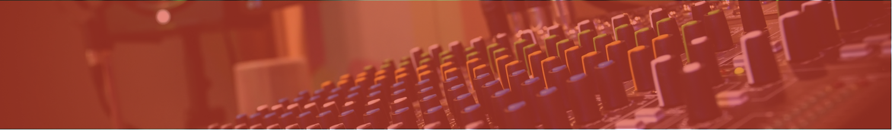

EL CAMINO DEL ARTISTA
La música que te define, las voces que te entienden.
El Camino Del Artista está producido por We Are Piccadilly, (sin ánimo de lucro, presentado y dirigido por Tomás Martínez), para La Radio Del Sur. MÉXICO (La Paz, Baja California Sur).
El programa está basado principalmente en contenido musical, abarcando diferentes estilos, con bandas y artistas de distintas épocas, con análisis y seguimiento a la actualidad musical.
Además de la música, “El Camino del Artista” cuenta también con información cultural, basadas en multitud de disciplinas artísticas como el cine, teatro, conciertos, pintura, escultura, literatura, etc.
“El Camino del Artista” pretende crear un viaje de sensaciones sonoras, ofreciendo también datos biográficos de las canciones, artistas y bandas programadas como contenidos del programa.
ESPAÑA / ITALIA / FRANCIA / ALEMANIA: 23.00h
MÉXICO: 15.00h
LA PAZ: 14.00h
COLOMBIA / PERÚ / BOLIVIA: 16.00h.
Nuestros Ultimos Programas: